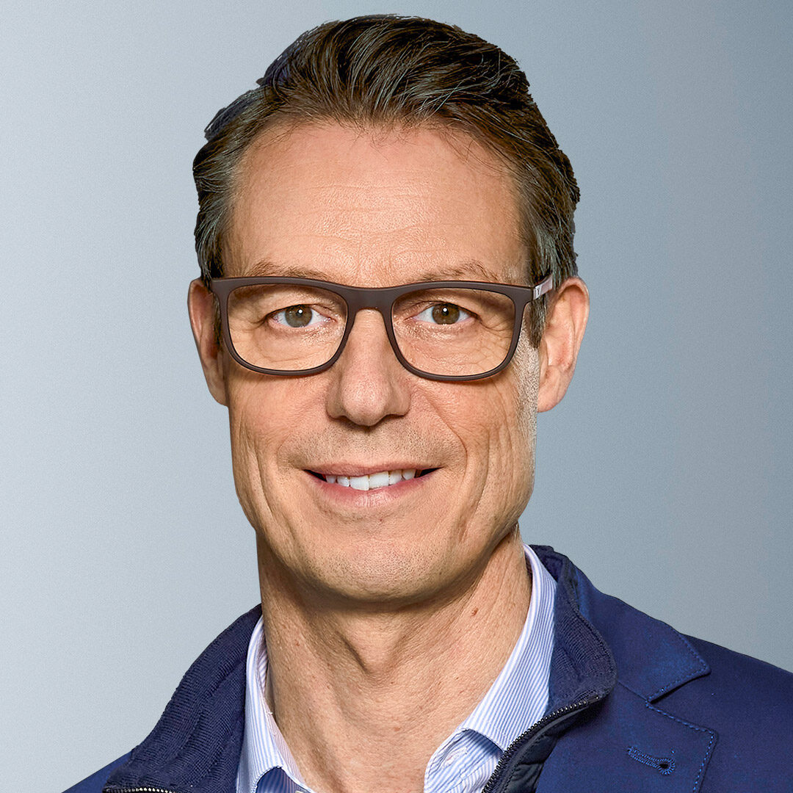
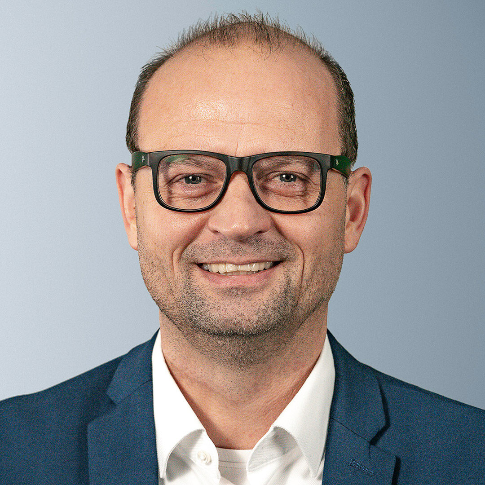

The Gebr. Brasseler GmbH & Co. KG group Lemgo announces a realignment in the divisions Komet Dental and Komet Medical
Published on 07 February 2024
- Stephan Koehler, Chairman of the Management Board, has taken over overall responsibility for the Komet Dental business unit from Managing Director Klaus Ruebesamen.
- Carsten Cieslik has been appointed as the new Head of the Komet Dental business unit.
- The previously separate Medical and Custom Made business units, which both operate on the market as CDMO (Contract Development and Manufacturing Organization), will be merged.
- Jens Haverkamp is responsible for the newly established Komet Medical business unit, which now comprises the areas of orthopaedics and trauma surgery, ENT and neurosurgery as well as dental implantology.
Lemgo, 07 February, 2024
The medical technology group Gebr. Brasseler Lemgo announces a change of management in the Dental and Medical divisions at the beginning of the year. The changes are the result of an organizational realignment: the Komet Medical business unit will be strategically expanded to include Dental Implantology expertise. The “Custom Made” business unit, which was previously responsible for this field, will be merged with the Medical business unit. The aim of the family-owned company is to bundle core competencies, promote the positive market development in bone surgery and dental implantology and respond effectively to changing customer needs.
With this in mind, the Brasseler Group has restructured it´s management team.
****
Stephan Koehler, Chairman of the Management Board, assumed overall responsibility for the Komet Dental division on January 1. He has already been responsible for the Medical business unit since 2021. Stephan Koehler joined the Brasseler Group in 2017. As Managing Director, the internationally experienced manager is also responsible for Technology, HR and Supply Chain Management.
Klaus Ruebesamen, Managing Director of Brasseler, has been with the company for over 40 years and has played a key role in the success story of Brasseler and the Komet brand over the decades. At the turn of the year, Klaus Ruebesamen handed over responsibility for the dental business to Stephan Koehler. For the Dental business unit, Klaus Ruebesamen will drive expansion in selected Asian markets and contribute his experience and his network to the establishment of a Komet Academy for dentists and employees. The Jewelry Business Unit and the areas of Quality Management, Regulatory Affairs and ESG will remain under his leadership.
As General Manager of the Medical Business Unit, Jens Haverkamp will charge of the further development of the growth area in the field of general bone surgery. As a result of the merger with the former Komet Custom Made Business Unit, his area of responsibility will be expanded to include Dental Implantology as of January 1. Both business units have been growing at double-digit rates for years.
The graduate in business administration (MBA) began his career at the Brasseler Group in 1998 as Sales Manager and later Managing Director of a subsidiary for dental instruments, and from 2004 he was Sales and Marketing Manager of the Brasseler´s Medical Division. Since the foundation of the Brasseler´s Business Units in 2013 he has been responsible for the Medical BU.
Carsten Cieslik was appointed as the new Head of the Dental business unit on January 1 and will lead the largest business unit and the subsidiaries in the USA, France, Italy and Austria. Over 400 employees in Sales, Product Management, Marketing and Digital Services work on solutions for dental customers worldwide.
Carsten Cieslik has been with Brasseler for over 30 years. After training as an Industrial Business Management Assistant, he started off as Country Group Manager Export Dental and took over as Sales Manager of the Industry Division in 2001. From 2013, he was responsible for the Komet´s Custom Made division.
Quotes
Jens Haverkamp
“The expansion of the Medical division to include our expertise in dental implantology creates great synergies, as two very professional and experienced teams are growing together. We are pooling our core competencies in order to generate further growth in an effective and marketoriented manner. We have big plans – and I am very much looking forward to shaping this process together with my team and making it a success.”
Carsten Cieslik
“My entire professional life has been defined by products and services for our customers in the field of dentistry. Building on the impressive successes of Klaus Ruebesamen and my predecessors as Head of the Komet Dental business unit is a very exciting task for me. The close contact between our high-profile, international team and our customers as well as our technical expertise are the best prerequisites for global growth. We will continue to set standards in the future with innovative products and services.”
Stephan Koehler
“Jens Haverkamp and Carsten Cieslik are two very experienced managers who have contributed significantly to the success of our company for decades. It is a positive signal that we managed to recruit both of them for the newly created roles. With their expertise in the needs of our customers in international markets, they will drive the further development of our business areas. In addition to their professional experience, Jens Haverkamp and Carsten Cieslik have excellent leadership qualities. Both exemplify the values that Brasseler stands for. This is an important factor to ensure that we remain true to ourselves as a family business during our continuous growth.”


Stephan Köhler


Klaus Rübesamen

Jens Haverkamp

Carsten Cieslik

Press Contact
Melanie Köhler
Corporate communication
Phone +49 (0) 160 3447748
presse@brasseler.de